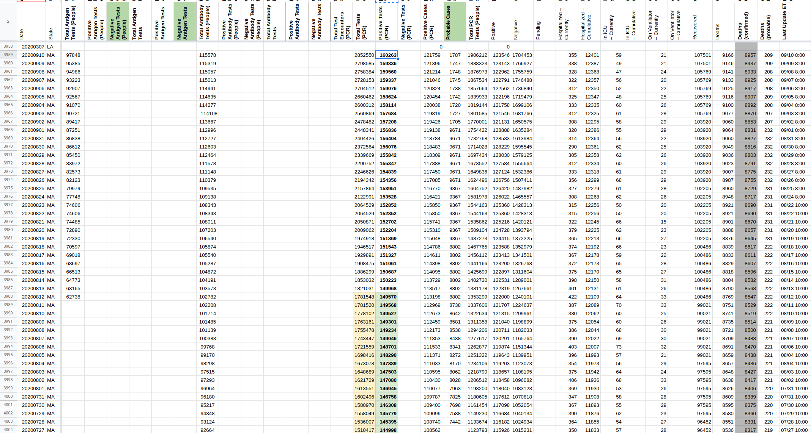
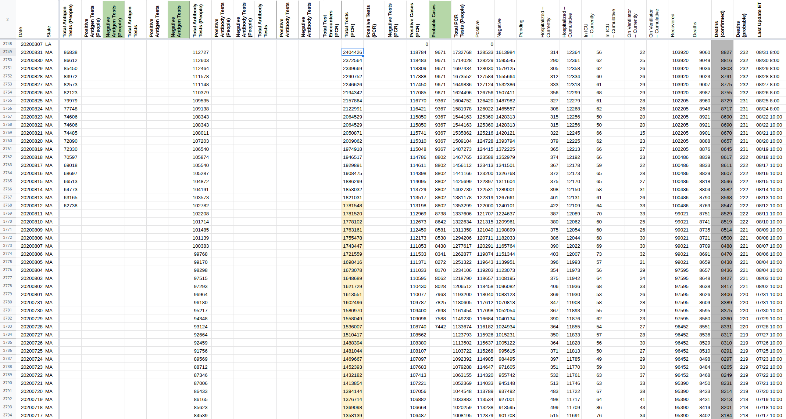
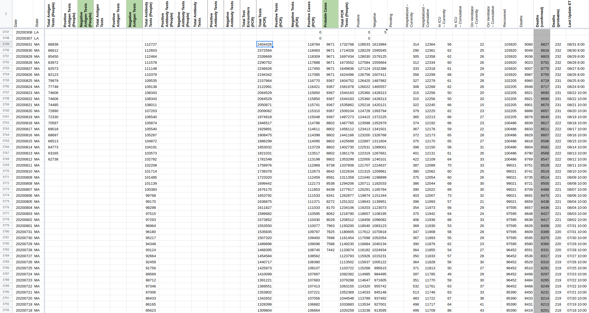

[MA] Total PCR tests backfill (and positive PCR)
We started collecting Total tests PCR from MAs data on the 16-06-2020 On 12-08-2020 MA published a full time series going back to 22-01-2020 for Total tests PCR (and positive PCR test results). We should backfill the Total PCR tests and Positive PCR test results from the available data
Comments
space-buzzer commented on September 11, 2020 at 2:36 pm
Filled Positive Tests (PCR) column with data published on Aug-12th and every day since (except 23rd-Aug, no data was published on that day).
Updated range: 2020-01-22 - 2020-09-10

we backfilled our Total PCR tests time series from the “TestingByDate.csv” file as captured on 12-08-2020 We’ll not fill Positive PCR test results at this time as this value does not yet appear on the PDF document represeting MAs dashboard. We will fill it in the same manner (12-Aug data for the historic values, and daily values from MAs raw datasets for daily updates).

 ma_pre_20200831[DataStore]Coronavirus numbers by state - [Raw]StatesDaily.csv.txt ma_post_20200831[DataStore]Coronavirus numbers by state - [Raw]StatesDaily.csv.txt